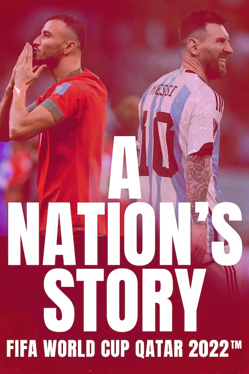

A NATION'S STORY
NC,2023,1 Saisons
Synopsis‘A Nation’s Story’ gives you a unique look at the stories of the four semi-finalists at the FIFA World Cup Qatar 2022. Featuring exclusive interviews with players and coaches, and footage from FIFA’s film cameras, the series provides a fresh perspective on the journey’s at the tournament.